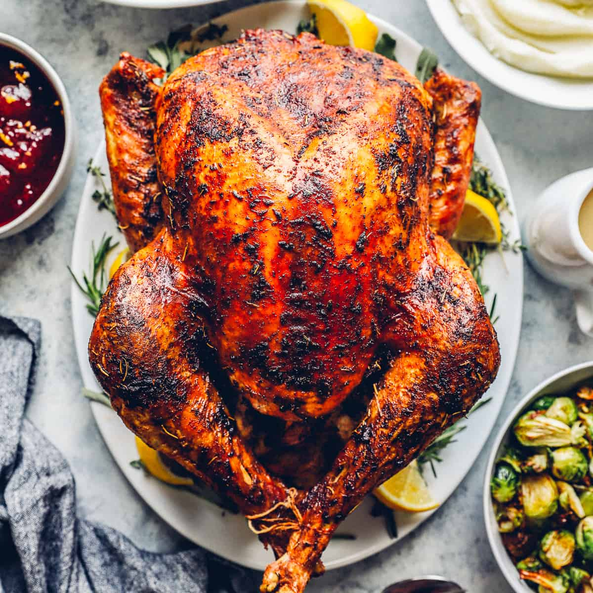
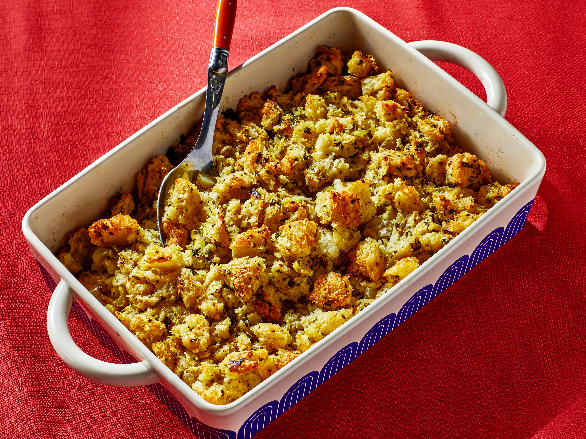
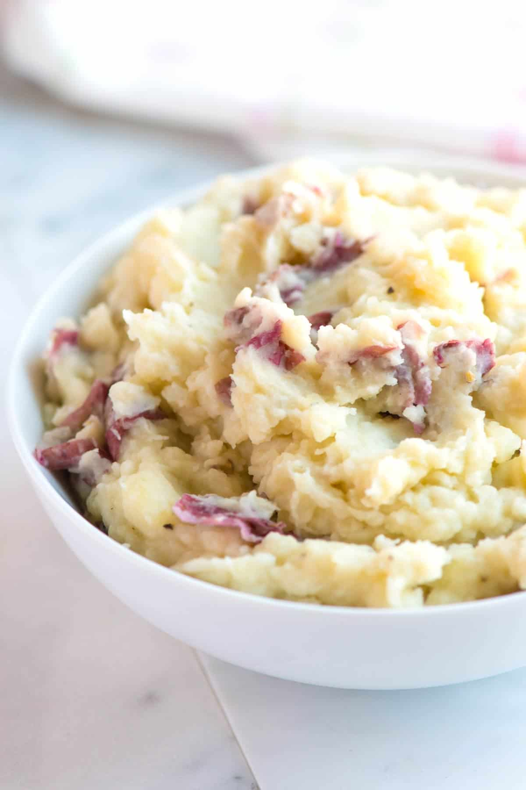
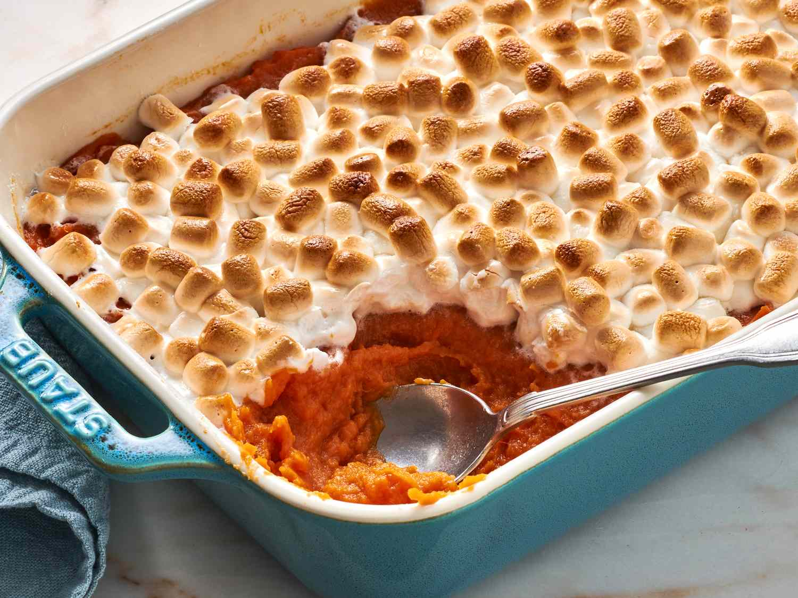
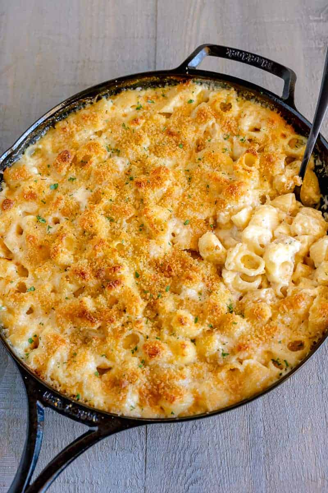

Thanksgiving is a holiday where families and friends come together to enjoy food and spend time together.

Turkey is one of the most popular Thanksgiving foods.

a quitisential side dish.

a classic side with many ways to be prepared.

Sweet potatoe casserole are a classic Thanksgiving side.

A beloved pasta dish

a well seasoned side dish.
When is Thanksgiving celebrated in the United States?